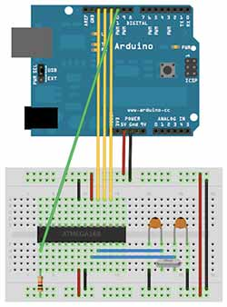
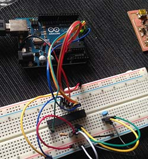

6 - Embedded Programming
Intro
The assignment of this week was to program the FabISP and the Helloboard using different techniques.
Programming the FabIsp
I used avrdude line command and Arduino as ISP. However, as we are using an Attiny 44a, I had to change the Device signature in the avrdude.conf . I wasn’t able to find online references about other values to change in that file.
To tell avrdude to use Arduino as ISP I changed this line in the Makefile:
AVRDUDE = avrdude -c arduino -P /dev/tty.usbmodem1421 -p t44 # edit this line for your programmer
For the connections I followed this tutorial http://highlowtech.org/?p=1695 and this reference http://arduino.cc/en/Reference/SPI.

The connection worked fine however I had this error and I wasn't able to solve it.
MacBook-Pro-di-Massimiliano:firmware Massimiliano$ make fuse
avrdude -c arduino -P /dev/tty.usbmodem1421 -p t44 -U hfuse:w:0xDF:m -U lfuse:w:0xFF:m
avrdude: AVR device initialized and ready to accept instructions
Reading | ################################################## | 100% 0.00s
avrdude: Device signature = 0x1e950f
avrdude: reading input file "0xDF"
avrdude: writing hfuse (1 bytes):
Writing | | 0% 0.00s ***failed;
Writing | ################################################## | 100% 0.08s
avrdude: 1 bytes of hfuse written
avrdude: verifying hfuse memory against 0xDF:
avrdude: load data hfuse data from input file 0xDF:
avrdude: input file 0xDF contains 1 bytes
avrdude: reading on-chip hfuse data:
Reading | ################################################## | 100% 0.00s
avrdude: verifying ...
avrdude: verification error, first mismatch at byte 0x0000
0x00 != 0xdf
avrdude: verification error; content mismatch
avrdude: safemode: hfuse changed! Was df, and is now 0
Would you like this fuse to be changed back? [y/n] n
avrdude: safemode: Fuses OK (H:00, E:DF, L:00)
avrdude: stk500_recv(): programmer is not responding
make: *** [fuse] Error 1
Then I decided to put the Arduino bootloader in it. To do this I had to tell to the Arduio IDE the characteristics of the board. Inside the /hardware folder of Arduino IDE I added the boards.txt taken from https://github.com/damellis/attiny/tree/master/attiny but, once again I found the reference for the ATtiny44 and not for the 44a.After adding the file another section appeared in the "boards" submenu:

In the board.txt file i had to add also this line: attiny44-20.bootloader.tool=avrdude
However I got this error and I wasn't able to solve it:
Arduino:1.5.8 (Mac OS X), Scheda:"ATtiny44 (external 20 MHz clock)"
avrdude: stk500_getparm(): (a) protocol error, expect=0x14, resp=0x14
avrdude: stk500_getparm(): (a) protocol error, expect=0x14, resp=0x01
avrdude: stk500_initialize(): (a) protocol error, expect=0x14, resp=0x10
avrdude: initialization failed, rc=-1
Double check connections and try again, or use -F to override
this check.
avrdude: stk500_disable(): unknown response=0x12
Errore durante la scrittura del bootloader
Programming the HelloBoard
After several attempts of flashing the board I realized that the problem was caused by several short circuits. Indeed a trace underneath the microcontroller was too close to the pads and, after soldering there was unwanted junctions. I wasn't able to fix it eve rith the desoldering wire. So I designed another version of the board with more space between pads and traces adding an extra 0 ohm resisto as a jumper. But I don't have enough time in this week so I'll complete the assignement in the next week.


Programming an AtTmega328
As the previous experiments wasn't successfull I decided to try with another microcontrolled. I went to a couple of shops in Rome but they didn't had neither the ATtiny44 nor the ATtiny45. So I bought an ATmega328P (throughole) for 9 euro. My objective was to burn the Arduino bootloader on it to have a minimal Arduino board. I followed this tutorial http://arduino.cc/en/Tutorial/ArduinoISP. However I keep receiving a sync error until I added an electrolitic 100uF capacitor between the ground and the reset pin on the Arduino board. The bootloader was correctly flashed. I wrote a simple sketch to send messages over the serial port.The ATmega cannot communicate directly with the computer so I used another Arduino board as USB-serial converter. To do this I removed the ATmega from the Arduino board and connected the pin 0(rx) to the pin 3(tx) of the microcontroller and the pin 1(tx) on the pin 2(rx) of the microcontroller. So I was able to program the microcontroller as a normal Arduino Uno and then I received the messages over the serial port, as expected.

 Attribution, non-commercial, share alike.
Attribution, non-commercial, share alike.